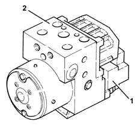
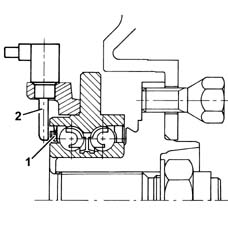
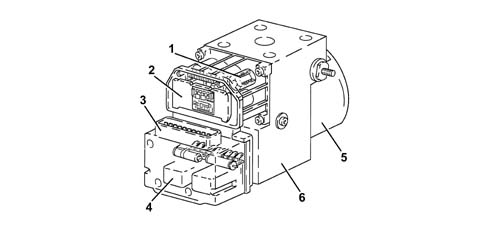
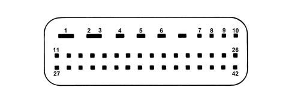
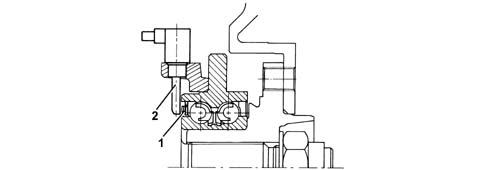
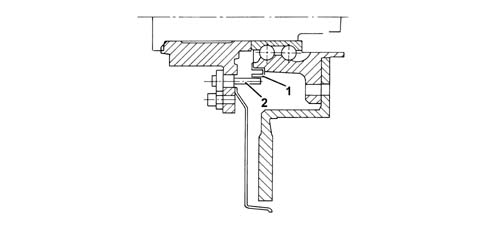

3340A abs check/adjustment devices
- Path
- Descriptions > 33 BRAKING SYSTEM > 3340 A(B.S. ANTI-LOCK BRAKING SYSTEM .) > 3340A abs check/adjustment devices
- Kind
- system description
- Applies to
- all engines; all production periods
- Interactive page
- https://sloeber94.github.io/elrnDB-a156/en/#/3232923
Applies to: all engines; production: fino a 03/98, da 04/98 a 02/99, da 03/99 a 01/00, da 02/00 a 01/01, da 02/01 a 02/02
ELECTRO-HYDRAULIC UNIT
It consists of an electronic control unit (1) and an electro-hydraulic control unit (2).

Electronic control unit
The electronic control unit is responsible for:
- acquiring the data coming from the 'active' wheel rpm sensors
- storing control parameters defined during the preparation of the vehicle
- storing the control software
- processes downloaded data
- controls the braking process
- detecting failures at the braking system components
- stores the fault codes and activates the A.B.S. warning lights.
- transmitting and receiving data via the diagnostic connector.
Hydraulic control unit
The electro-hydraulic control unit consists of:
- eight two-way solenoid valves
- a dual circuit electric recovery pump
- a low pressure accumulator
- a high pressure accumulator
Responsible for modulating the pressure of the fluid at the brake calipers via two solenoid valves with the following stages:
- brake fluid pressure increase
- brake fluid pressure maintenance
- brake fluid pressure discharge.
The letters indicating to which caliper and to which brake pump outlet they should be connected at stamped on the control unit at each outlet.
- RR = to the right rear brake (pipe marked with a light blue coloured band)
- LR = to the left rear brake (pipe marked with a green coloured band)
- RF = to the right front caliper (pipe marked with a yellow coloured band)
- LF = to the left front caliper (pipe marked with a white coloured band)
- MC1 = from the main circuit/flange side pump (pipe marked with a black or pink coloured band when the pipe polyammide resin is black)
- MC2 = from the secondary circuit/front pump (pipe marked with a brown coloured band).
Active sensors
They consist of two basic elements:
- a magnetic multi-polar codifier (1) integrated in the 'instrument' wheel hub bearing
- a Hall-effect receiver (2) opposite the codifier.
The adoption of active sensors offers the following advantages:
- it reduces sensitivity to electro-magnetic interference
- resists interference generated by road surface heating
- it saves weight and size
- it simplifies the transmission couplings through the elimination of the phonic wheels.

Applies to: all engines; production: da 03/02 a 09/03, da 10/03
CONSTRUCTION FEATURES
COMPONENT DESCRIPTION
Electrohydraulic unit
It consists of an electronic control unit and an electro-hydraulic control unit.

1- Solenoid valves 2 - Electronic control unit 3 - Electrical connection 4 - Relay 5 - Electric motor 6 - Electro-hydraulic unit casing
Electronic control
The electronic control unit is responsible for:
- acquiring the data coming from the 'active' wheel rpm sensors;
- memorizing the control parameters defined during car preparation;
- memorizing control software;
- processing dowloaded data;
- controlling the braking process;
- detecting failures at the braking system components;
- memorizing the fault codes and activating the A.B.S. and EBD warning lights;
- transmitting and receiving data via the tester connection;
- conversing with the injection and CAE control units via the CAN line (only for versions with automatic transmission).
Hydraulic control unit
The electro-hydraulic control unit consists of:
- twelve two-way solenoid valves;
- a dual circuit electric recovery pump;
- two low pressure accumulators;
- two high pressure accumulators.
Responsible for modulating the pressure of the fluid at the brake calipers via two solenoid valves with the following stages:
- brake fluid pressure increase;
- brake fluid pressure maintenance;
- brake fluid pressure discharge.
The letters indicating to which caliper and to which brake pump outlet they should be connected at stamped on the control unit at each outlet.
- RR = to the right rear brake (pipe marked with a light blue coloured band)
- LR = to the left rear brake (pipe marked with a green coloured band)
- RF = to the right front caliper (pipe marked with a yellow coloured band)
- LF = to the left front caliper (pipe marked with a white coloured band)
- MC1 = from the main circuit/flange side pump (pipe marked with a black or pink coloured band when the pipe polyammide resin is black)
- MC2 = from the secondary circuit/front pump (pipe marked with a brown coloured band).
PIN OUT

1 - Power earth 2 - Pump motor power supply (+30) 3 - Not connected 4 - Not connected 5 - Electronic earth 6 - Power supply (+30) 7 - Not connected 8 - Lateral acceleration (Not connected for the GTA version) 9 - Slewing sensor test (Not connected for the GTA version) 10 - Slewing sensor reference (Not connected for the GTA version) 11 - Diagnostic line K 12 - Left front sensor signal 13 - Left rear sensor supply 14 - Left rear sensor signal 15 - Right front sensor supply 16 - Right front sensor signal 17 - Not connected 18 - ASR disabling button warning light 19 - Not connected 20 - Brake switch (BS) 21 - Lateral acceleration/slewing sensor earth (Not connected for the GTA version) 22 - Warning lights serial line 23 - Power supply (+15) 24 - CAN-H line 25 - Pressure sensor earth 26 - Pressure signal 27 - ASR disabling switch 28 - Left front sensor supply 29 - Not connected 30 - Right rear sensor supply 31 - Right rear sensor signal 32 - Brake lights switch (BLS) 33 - Not connected 34 - Not connected 35 - Not connected 36 - Not connected 37 - Vehicle speed output (VSO) 38 - Handbrake 39 - Lateral acceleration/slewing sensor supply (Not connected for the GTA version) 40 - CAN-L line 41 - Slewing sensor signal (Not connected for the GTA version) 42 - Pressure sensor supply
Active sensors
They consist of two basic elements:
- a magnetic multi-polar codifier (1) integrated in the 'instrument' wheel hub bearing
- a 'magnetic-resistive' receiver (2) opposite the codifier.
The adoption of active sensors offers the following advantages:
- it reduces sensitivity to electro-magnetic interference;
- it produces savings in weight and size;
- it simplifies the transmission couplings through the elimination of the phonic wheels.
Front active sensors
.

Rear active sensors
.
